| 1. 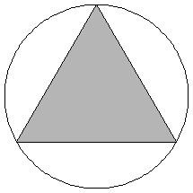 | 2. 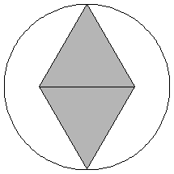 | 3. 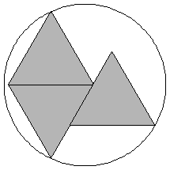 | ||
| r = 1/√3 = .577+ Trivial. | r = √3/2 = .866+ Trivial. | r = 3√3 - 3√2 = .953+ Found by Erich Friedman in 1997. |
| 4. 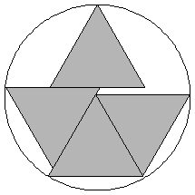 | 5. 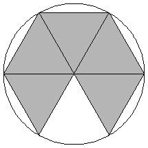 | 6. 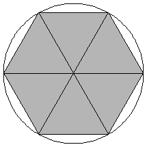 | ||
| r = .980+ Found by Erich Friedman in 1997. | r = 1 Trivial. | r = 1 Trivial. |
| 7. 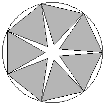 | 8. 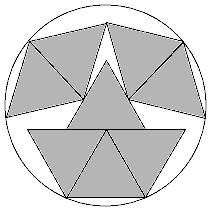 | 9. 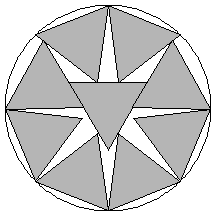 | ||
| r = 1.152+ Found by Erich Friedman in 1997. | r = 1.263+ Found by Maurizio Morandi in April 2008. | r = 1.314+ Found by David W. Cantrell in July 2002. |
10.
| 11. 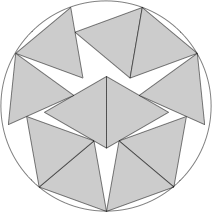 | 12. 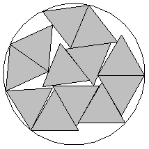 | ||
| r = 1.385+ Found by David W. Cantrell in July 2002. | r = 1.466+ Found by DC after MM in August 2012. | r = 1.507+ Found by David W. Cantrell in October 2005. |
| 13. 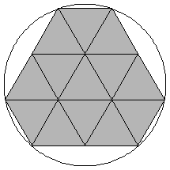 | 14. 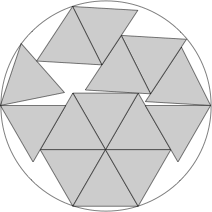 | 15. 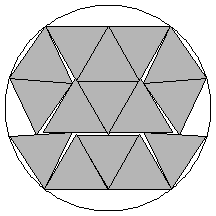 | ||
| r = √(7/3) = 1.527+ Found by Erich Friedman in 1997. | r = 1.609+ Found by DC after MM in August 2012. | r = 1.636+ Found by David W. Cantrell in July 2002. |
| 16. 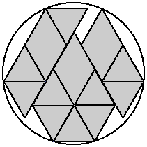 | 17. 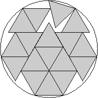 | 18. 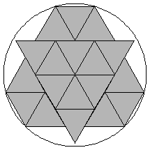 | ||
| r = 1.687+ Found by Maurizio Morandi in April 2008. | r = 1.730+ Found by David W. Cantrell in July 2005. | r = √13/2 = 1.802+ Found by Erich Friedman in 1997. |
| 19. 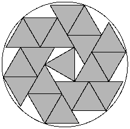 | 20. 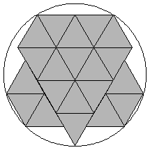 | 21. 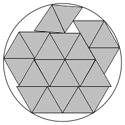 | ||
| r = √(10/3) = 1.825+ Found by Haym Hirsh in August 2019. | r = 1.874+ Found by Erich Friedman in 1997. | r = 1.910+ Found by Maurizio Morandi in May 2008. |
| 22. 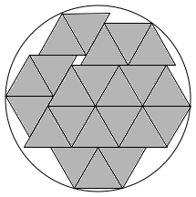 | 23. 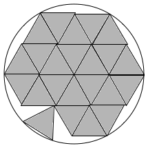 | 24. 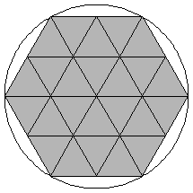 | ||
| r = 1.943+ Found by Maurizio Morandi in June 2008. | r = 1.988+ Found by Maurizio Morandi in June 2008. | r = 2 Trivial. |
| 25. 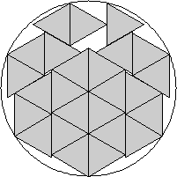 | 26. 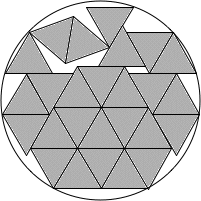 | 27. 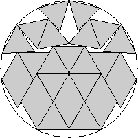 | ||
| r = 2.055+ Found by David W. Cantrell in July 2005. | r = 2.109+ Found by Maurizio Morandi in April 2008. | r = 2.138+ Found by David W. Cantrell in July 2005. |
| 28. 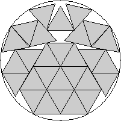 | 29. 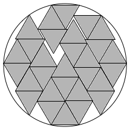 | 30. 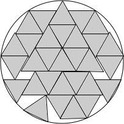 | ||
| r = 2.191+ Found by David W. Cantrell in July 2005. | r = 2.215+ Found by Maurizio Morandi in June 2008. | r = 2.258+ Found by Maurizio Morandi in July 2008. |
| 31. 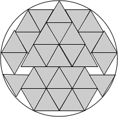 |
| r = 2.272+ Found by Maurizio Morandi in July 2008. |